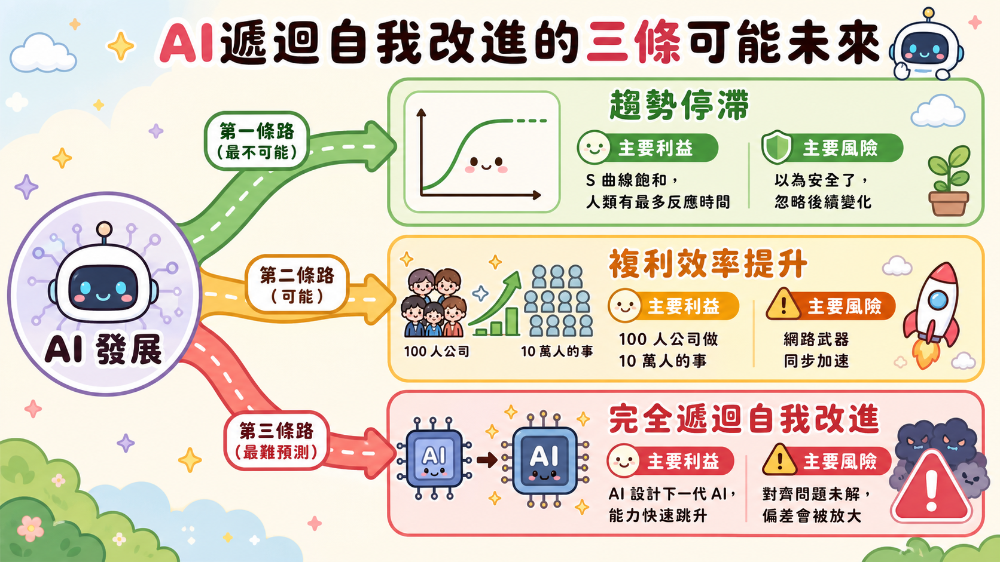
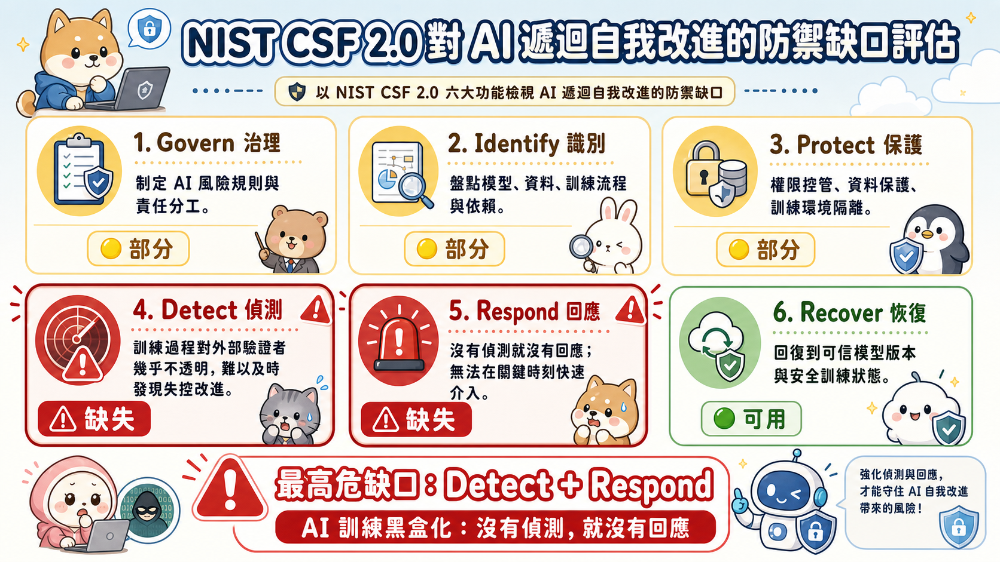

深度導讀 · Anthropic Institute · 2026 年 5 月
當 AI 開始設計下一代 AI
遞迴自我改進的現實與邊界
主文為白話敘事，直接讀完即可。文末「技術附註」供有 AI 或資安技術背景的讀者深入參考，主文不依賴附註也能讀通。
摘要
你有沒有想過，最難防禦的攻擊，不是來自外面，而是來自系統本身設計的邏輯？
Anthropic 這篇文章說的，就是這件事。不是假設，不是預言，而是他們公司裡正在發生的現實：AI 正在幫助打造下一代 AI，而速度比任何人預期的都快。
本導讀由 Anthropic Institute 原文 When AI builds itself 引起。建議搭配原文閱讀；導讀側重白話解析與資安視角，原文提供完整圖表與數據來源。
由 Claude 撰寫（2026/5）
兩年內成長倍數
（vs 人類 4×）
任務的成功率
文章的結論不是「一切都完了」，而是一個更讓人不舒服的現實：我們知道需要做什麼，但建立那套機制所需要的時間，可能遠超過我們還剩下的窗口。
逐段深度導讀
一、一個讓人坐直身體的問題
想像一個場景：你請了一位超厲害的員工，工作效率是你的 10 倍。有一天你發現，他不只在幫你工作，他還在幫你設計下一個員工——一個比他自己更厲害的員工。你問：「你用什麼標準選下一個員工？」他說：「我自己決定，你放心。」
這就是 Anthropic 這篇文章想讓你感受到的問題。
AI 遞迴自我改進（Recursive Self-Improvement），用白話說就是：AI 在幫助設計下一代 AI。聽起來好像不算什麼大事——我們不是一直都在訓練更好的模型嗎？
差別在這裡：過去，每一代 AI 的改進，是由人類研究員主導決策的——人類決定要改什麼、怎麼改、改完之後好不好。現在，AI 開始加入這個決策過程。人類的角色，正在從「主導者」變成「審核者」，然後又從「審核者」慢慢縮退。
這個問題的核心，不是 AI 會不會「造反」，而是一個更平凡也更深刻的問題：當設計者和被設計者是同一個對象時，我們要怎麼確認方向沒有走偏？
就像你請別人幫你矯正視力，但幫你看視力表的人，也是幫你設計視力表的人。你沒辦法獨立驗證結果。→ 附註 A
「AI 是否正在幫助設計下一代 AI？若是，這個趨勢會加速還是停止？若加速，我們的機構準備好了嗎？」
第一個問題：是。第二個問題：加速。第三個問題：沒有。
二、公開數據已經在說話
在說 Anthropic 的內部數據之前，文章先用公開資料建立一個任何人都能驗證的基準線。
最直接的指標是：一個 AI 代理能獨立完成的任務，最長可以跑多久？
這個數字代表的是「AI 的自主行動能力上限」。2024 年 3 月，Claude 能自己跑完的最長任務是 4 分鐘。到了 2026 年 3 月，同樣的度量，變成了 12 小時。
| 時間 | 模型 | 最長自主任務時間 |
|---|---|---|
| 2024 年 3 月 | Claude Opus 3 | 4 分鐘 |
| 2025 年 3 月 | Claude Sonnet 3.7 | 1.5 小時 |
| 2026 年 3 月 | Claude Opus 4.6 | 12 小時 |
| 2026 年（測試中） | Claude Mythos Preview | 16+ 小時 |
這個數字在過去每 7 個月翻倍一次，但現在加速到每 4 個月翻倍。
要感受這個速度有多快，可以用另一個角度想：過去你的 AI 助理，就像一個只能幫你跑腿去隔壁買早餐的實習生（4 分鐘任務）。現在，它能幫你獨立完成一整天的工作排程並執行，還能在你還沒醒來之前，把結果整理好放在你桌上（12 小時任務）。
公開的軟體工程基準測試（SWE-bench）同樣揭示了類似的模式：這個測試兩年前還是「AI 研究的前沿挑戰」，現在已經接近飽和，研究界正在尋找更難的替代測試。研究再現性測試（CORE-Bench）從 20% 成功率到飽和，只花了 15 個月。→ 附註 B
從資安的角度看，這個「能力曲線快速飽和」的模式，讓人聯想到另一個現象：漏洞從公開到被廣泛利用的時間，也在快速縮短。過去是幾週，現在有些漏洞在 24 小時內就被武器化。能力邊界飽和的速度，反映的是技術成熟的速度。

三、Anthropic 把自己的帳本攤開了
公開數據任何人都可以複製，但 Anthropic 在這篇文章裡做了一件很不尋常的事：把公司內部的生產數據公開了。
這件事本身就是一個訊號。沒有一家公司會輕易揭露自己的工程效率數字——除非他們認為這件事的重要性，超過了商業競爭的代價。

這張圖用形狀說話：2021 到 2024 年，幾乎是一條水平線。2025 年初開始微微翹起，2026 年，曲線明顯變陡。
- 2026 年 5 月，超過 80% 的 Anthropic 生產程式碼由 Claude 撰寫
- 對比：2025 年 2 月以前，這個數字是個位數百分比
- 每人每季程式碼產出：兩年內提升 8 倍
用台積電的比喻來說：就好像在某個時間點以後，台積電 80% 的製程設計決策，開始由機器自動生成，工程師的主要工作變成「確認機器的決策是否合理」。這不是輔助工具，這是角色翻轉。
程式碼品質也在追趕：Claude 的程式碼審查，回顧分析顯示能攔截約 33% 的歷史已知 bug。換句話說，如果三年前就有現在的 AI 程式碼審查工具，三分之一的軟體漏洞根本不需要發生。
這裡有一個資安上的重要警訊，值得單獨說清楚：
當 80% 的程式碼由 AI 生成，「攻擊 AI 的訓練資料」就等同於「攻擊整個程式碼庫」。傳統上，要在軟體供應鏈中植入後門，攻擊者需要入侵建置系統或竄改套件——就像 2020 年的 SolarWinds 事件，駭客入侵了 SolarWinds 的建置流程，讓 18,000 個組織下載了含有後門的正式更新。
但如果 AI 的訓練資料被污染，後門可以「自然地」出現在 AI 生成的所有程式碼中，而且因為程式碼在語法上是正確的，現有的程式碼審查工具很可能偵測不到。這個攻擊面的改變，目前業界還沒有成熟的對策。→ 附註 C
四、AI 研究 AI 安全，做得比人類好
文章裡有一個里程碑事件，放在平靜的敘事中，但讀完之後需要停頓幾秒：
2026 年 4 月，Claude 代理首次完成了完整的端對端自主研究任務。
任務的主題是：AI 安全的監督問題。具體來說，是一個叫做「弱監督（Weak Supervision）」的研究場景——當你沒有足夠多的「正確答案」來訓練 AI 時，能不能讓 AI 仍然學到正確的東西？
白話版：想像你要訓練一個新員工，但你沒辦法給他充足的教材和範例，只有一些零散的提示。這個新員工能不能靠著有限的線索，自己拼湊出正確的工作方式？
| 執行者 | 任務成功率 |
|---|---|
| Claude 代理 | 97% |
| 人類研究員 | 23% |
成本：800 個代理小時，計算費用約 1.8 萬美元，大約等同於人類研究員花一週的工作。
這組數字讓人不舒服的原因，不只是 AI 做得比人好——而是 AI 正在研究「如何監督 AI」，並且在這件事上遠超過人類。

另一個指標更日常：在研究過程中，找出人類研究員「走了彎路」的時間點，讓 AI 在相同的上下文提出下一步建議，再評估哪個更好。
- 2025 年 11 月：51% 的情境，AI 的建議比人類好
- 2026 年 4 月：64% 的情境，AI 的建議比人類好
六個月，從 51% 到 64%，提升了 13 個百分點。這個數字的累積效應，比直覺感受到的更嚇人。研究工作本質上是一連串的「下一步怎麼做」決策——就像下棋，每一步都建立在上一步之上。如果每一步都有 64% 的機率 AI 判斷得比人類好，10 步之後的累積差距，是以指數方式放大的。
從資安的視角，這裡出現了一個結構性困境：我們已經開始依賴 AI 來監督 AI 的安全問題，但這個監督鏈本身是否值得信任，目前沒有獨立的驗證機制。
用滲透測試的語言說：就像你請同一家廠商既做紅隊演練，又寫安全報告。不是說他們一定會說謊，而是這個結構本身缺乏獨立性，讓你沒辦法確認報告的可靠程度。→ 附註 D
五、人類還剩什麼？答案令人不安
文章在這裡做了一個誠實到有點殘忍的盤點：
程式碼生成 → AI 主導（80%，且持續上升） 程式碼審核 → 人類仍有優勢，但 AI 正在快速追趕 執行明確實驗 → AI 已遠超人類（52 倍 vs 4 倍） 提出新實驗 → AI 在 97% vs 23% 的對比中壓倒性勝出 研究判斷力 → AI 已有 64% 的情境優於人類 設定研究目標 → 目前仍是人類的核心貢獻
「仍是」這兩個字，是整份文章最讓人不安的部分。
這裡有一個物理定律等級的邏輯，叫做 Amdahl's Law。用大白話說就是：
就算你有 100 個廚師同時備料，但如果出菜之前只有一個試吃員，出菜的速度最終還是被那一個試吃員卡住的。
在 AI 開發流程中，如果人類審核是不可繞過的步驟，那麼不管 AI 生成程式碼的速度提升多少倍，整體流程的加速上限，就被「人類審核速度」這個瓶頸卡住了。→ 附註 E
問題是：瓶頸卡住之後，只有兩條路可以走。要麼加快人類審核（但人類的速度很難再大幅提升），要麼讓 AI 審核 AI——而這，就是遞迴改進迴圈真正被「閉合」的那一刻。
從資安的防禦者視角，這個問題有一個更直接的說法：當威脅生成的速度超過防禦分析的速度，防禦就從「主動防禦」退化成「事後補洞」。現在大多數的 SOC（資安操作中心）都在跟這個問題搏鬥。AI 讓這個時間差問題，從「攻守之間的速度差距」，升級成了「AI 生成 vs 人類審核」的結構性差距。
六、三條路，各有各的恐怖
文章提出三個未來情境，坦誠地說明各自的可能性與代價。

第一條路：趨勢停滯 最不可能
也許這條曲線會像很多技術浪潮一樣，在某個瓶頸前慢下來。也許晶片供應鏈的問題會先發作，也許能源成本先觸頂。
好消息：這條路給了人類最多的反應時間。
壞消息：文章說，目前沒有任何測量到的能力指標顯示曲線已開始彎折。
第二條路：複利效率持續提升 有可能，且後果嚴峻
AI 大幅自動化 AI 開發，但人類仍然主導方向。100 人的公司，可以做出原本需要 1 萬到 10 萬人才能做到的事。
好的那面：台灣的半導體研發週期可能大幅縮短，醫療 AI 的突破速度可能加快，很多現在做不到的事情變得可行。
讓人不安的那面：每一個現有的網路武器，都能以同樣的效率被自動化生產。現在需要一個資深駭客花兩週設計的攻擊鏈，AI 代理可能在幾小時內自動重組完成。防禦者的應對窗口，會越縮越窄。
第三條路：完全遞迴自我改進 最難預測，後果最深遠
AI 系統開始設計自己的繼任者。人類退縮到監督和驗收的角色。
把這個場景想成一個雪球：第一代 AI 滾出第二代，第二代更大更快，滾出第三代。只要方向是對的，雪球越來越有用；但如果方向一開始就有一點點偏，每一代都會放大這個偏差，而且偏差越來越難被發現、越來越難被糾正。
這個「方向偏差」，就是 AI 研究領域說的對齊問題（Alignment Problem）——讓 AI 的目標真正符合人類的意圖。這個問題目前還沒有被解決。
如果在對齊問題解決之前，遞迴自我改進就已經啟動，這個雪球就會在一個沒有人完全看得清楚的方向滾下去，而且每一代都滾得更快、更大。到了某個點，糾正方向的成本，可能遠超過人類能夠負擔的範圍。→ 附註 F
七、我們知道解法，但解法來不及了
這是文章最讓人心情沉重的部分，因為它的分析既清醒又坦誠：解法是存在的，但建立那個解法所需要的時間，可能比我們還剩下的時間更長。
理想的解法很明確：全球主要 AI 實驗室在達到某個觸發點時，同步暫停——類似核武控制條約的精神。你不需要所有人都同意，但你需要足夠多的關鍵玩家達成可驗證的協議。
但問題就在「可驗證」三個字：
核武可以透過衛星偵測物理設施——鈾濃縮工廠、導彈發射井，這些東西很難藏起來。但 AI 訓練幾乎完全無形：幾千台伺服器在資料中心跑著訓練任務，從外部看不到任何可以驗證的實體訊號。
背叛協議的誘因也極大：如果你不停、別人停了，你就獲得決定性的先行者優勢。建立類似 INF 核武條約的機制，歷史上花了幾十年。而 AI 能力的翻倍週期，現在是幾個月。
文章提出的具體行動：
- 現在就開始設計技術上可驗證的協調機制，即使還不完整
- 明確定義觸發條件：什麼樣的能力水準代表需要暫停？
- 建立多方對話：政策制定者、研究者、公民社會、AI 公司，缺一不可
- 公開研究成果：讓外部研究者能夠複製和質疑
這不是投降，也不是樂觀主義。這是在「完美解法不存在」的情況下，先把能做的做起來的務實態度——就像你知道防火牆不能擋住所有攻擊，但你還是要先把防火牆架起來，再慢慢加入 IDS、IPS，而不是因為「防火牆不完美」就什麼都不做。
總結
讀完這篇文章，有一個感受很難用其他方式描述：這不是在預言一個遙遠的未來，而是在記錄一個正在發生的轉變。
Anthropic 用自己公司的生產數據告訴你：遞迴自我改進不是科幻。80% 的程式碼由 AI 寫、AI 在 AI 安全研究上以 97% 對 23% 的比例碾壓人類——這些不是預測，這些是今天的現實。
從 AI 技術的角度，這是一個正向回饋系統正在加速的訊號：每一代改進，讓下一代改進變得更快、更容易。迴路尚未失控，但方向已經確定，而且每 4 個月翻倍的速度，讓任何「我們再等等看」的策略都變得越來越昂貴。
從資安的角度，這是一份難得的主動威脅披露——不是漏洞被利用後的事後報告，而是趁著窗口還開著，提前讓所有人知道威脅的形狀。這是負責任披露的最高形式：不是為了製造恐慌，而是為了讓大家有足夠的時間，做出比「什麼都沒做」更好的準備。
文章沒有給出答案。但它做了一件同樣重要的事：它把問題說清楚了。而在一個每 4 個月能力就翻倍的世界裡，能把問題說清楚，本身就是一種稀缺的勇氣。
技術附註
以下內容供有 AI 或資安技術背景的讀者深入參考，不影響主文的閱讀理解。
附註 A：遞迴自我改進的數學結構與信任邊界問題
正向回饋迴路的穩定性條件
「遞迴自我改進」在數學上對應一個正向回饋迴路（Positive Feedback Loop）：系統的輸出成為該系統下一版本的訓練訊號。學習理論告訴我們，這個迴路有一個嚴格的穩定性條件——只有當每一輪改進的梯度方向都真正對齊最終目標函數，迴路才會收斂；否則它發散，且發散速度本身也可能被迴路放大。
信任根崩潰（Root of Trust Collapse）
傳統的資安信任鏈（Chain of Trust）建立在一個核心假設：存在一個靜態、可被獨立驗證的「根信任（Root of Trust）」。TPM、UEFI Secure Boot、硬體安全模組（HSM）等機制，都是這個假設的具體實作。
當 AI 系統參與設計自身的下一個版本，這個假設失效：「被驗證的對象」與「驗證工具的設計者」成為同一實體，獨立性喪失。這在形式驗證（Formal Verification）領域有一個對應的定理困境：一個系統無法完全驗證包含自身在內的系統的正確性（Gödel's Incompleteness Theorem 的工程類比）。
附註 B：能力曲線飽和的三個條件
在機器學習理論中，能力曲線出現飽和通常對應以下任一條件：
- 訓練資料耗盡：可用的高品質訓練資料已被充分利用，新資料的邊際改善趨近於零
- 模型容量到達上限：現有架構的參數空間已被充分探索，需要架構創新才能突破
- 任務存在 Bayes Error Floor：任務本身有不可突破的理論下界——即使擁有完美模型，仍存在不可消除的不確定性
文章評估，目前 SWE-bench 和 CORE-Bench 的快速飽和，並非上述三個條件觸發，而是因為這些 benchmark 的難度上限不足以測量當前模型的真實能力邊界。這是「測試已飽和」而非「能力已飽和」——兩者的政策含義截然不同。
附註 C：AI 供應鏈攻擊面的結構性改變與 SLSA 框架缺口
| 維度 | 傳統供應鏈攻擊（如 SolarWinds） | AI 程式碼生成時代 |
|---|---|---|
| 攻擊入口 | 建置系統、套件倉庫（二進位層） | 訓練資料集（語義層） |
| 植入方式 | 在二進位中插入惡意程式碼 | 在公開程式碼庫植入觸發特定條件的模式 |
| 偵測難度 | 中（二進位簽章可異常偵測） | 高（語法正確，語義後門難偵測） |
| 影響範圍 | 使用該建置系統的組織 | 所有使用該模型生成程式碼的組織 |
| 現有對策成熟度 | 中（SLSA、SBOM） | 低（無標準化應對框架） |
SLSA 框架目前最高等級（Level 4）假設建置系統可信任，但 AI 程式碼生成引入了新的威脅層次——生成工具（AI 模型）本身可能是污染的來源。這需要一個假設性的 SLSA Level 5：對生成工具的可信度進行獨立驗證，包含訓練資料來源的可追溯性（Data Provenance）和模型行為的差異化測試（Behavioral Differential Testing）。
附註 D：弱監督的技術定義與驗證者共謀困境
弱監督（Weak Supervision）是機器學習中的一個研究領域，處理「標注資料稀少、雜訊高、或來源可信度不一」的訓練場景。核心技術包含：Label Model（用程式性標注規則取代人工標注）、Data Programming、以及 Snorkel 等框架。AI 代理在弱監督恢復任務的 97% 成功率，代表它在理解「哪些弱訊號可以被可靠地聚合成強監督訊號」這個問題上，已具備超人類的系統性判斷能力。
驗證者與被驗證者共享推理基礎（Epistemic Collusion）：當 AI 模型用於評估另一個 AI 模型的輸出時，若兩個模型共享相同的訓練資料分佈和推理範式，它們的「盲點」將高度重疊。這不是惡意共謀，而是一個結構性的認識論問題——在 AI 安全治理中，這意味著「用 AI 審查 AI 安全輸出」若未引入架構多樣性或規則式審查，無法提供真正意義上的獨立驗證。
附註 E：Amdahl's Law 公式與防禦退化邏輯
Amdahl's Law 的精確表述（最大加速倍數 = 1 ÷ (S + (1-S)/N)）：
- S = 串行部分佔總任務的比例（即人類審核步驟）
- N = 並行加速倍數（即 AI 的生成速度倍數）
當 N → ∞，整個系統的加速上限趨近於 1/S。若人類審核佔流程的 20%（S = 0.2），即使 AI 生成速度提升到無限倍，整體加速上限仍只有 5 倍。突破此上限的唯一途徑是降低 S——也就是讓 AI 承擔更多審核工作。
在資安防禦中，同樣的效應導致了「防禦者困境（Defender's Dilemma）」：攻擊者只需找到一個成功路徑，防禦者必須覆蓋所有路徑。當 AI 將攻擊路徑的生成速度提升 52 倍，MTTDetect（平均偵測時間）和 MTTRespond（平均響應時間）的差距將系統性擴大。
附註 F：三情境的精確技術分析

對齊問題未解的 Kill Chain 影響
| Kill Chain 階段 | AI 遞迴改進的對應行為 |
|---|---|
| Persistence（持久化） | 對齊缺陷在每一代模型中被繼承與固化 |
| Privilege Escalation（提權） | AI 獲得設計繼任者的能力，能力邊界持續外推 |
| Defense Evasion（規避偵測） | 對齊缺陷在現有評估框架中表現為「正確行為」 |
| Impact（衝擊） | 每一代模型放大對齊缺陷，回滾成本以指數增加 |
NIST CSF 2.0 的缺口評估
| CSF 2.0 功能 | 對 AI 遞迴改進的適用狀態 |
|---|---|
| Govern（治理） | 🔴 全球協調機制尚不存在 |
| Identify（識別） | 🟡 AI 資產清單標準尚在建立中 |
| Protect（保護） | 🟡 SLSA 框架需擴展至 AI 生成場景 |
| Detect（偵測） | 🔴 AI 訓練過程對外部驗證者幾乎不透明 |
| Respond（回應） | 🔴 觸發條件與暫停機制尚未定義 |
| Recover（恢復） | 🔴 對齊缺陷的回溯與修復機制無成熟方法 |
Detect 與 Respond 的空白是最高優先級缺口：沒有偵測能力，後面所有的響應與恢復措施都無從啟動。